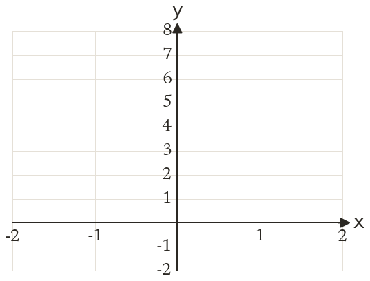
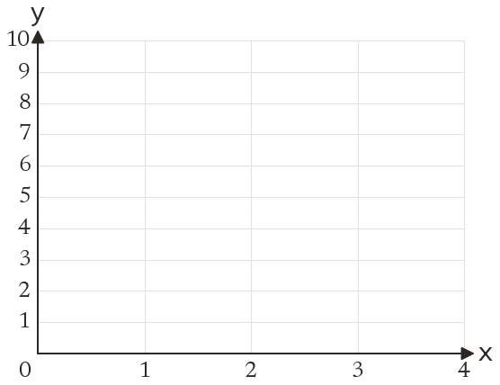
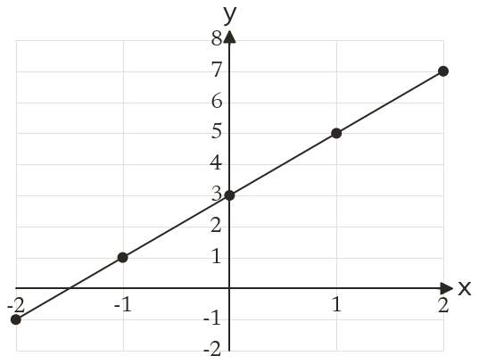
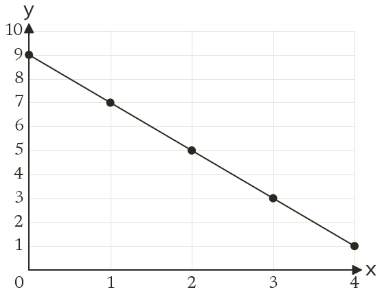

Westonbirt Maths · Linear Graphs
Plotting Linear Graphs from Tables
Name: ______________________ Date: ____________
1
Complete a table of values for y = 2x + 3 for x = -2, -1, 0, 1, 2.
2
Plot your points from question 1 and draw the line y = 2x + 3.
3
Complete a table of values for y = 9 - 2x for x = 0, 1, 2, 3, 4.
4
Plot your points from question 3 and draw the line y = 9 - 2x.
5
Complete a table of values for y = 3x - 4 for x = -1, 0, 1, 2, 3.
Ext
Does (5, 13) lie on y = 2x + 3? Does it lie on y = 9 - 2x?



